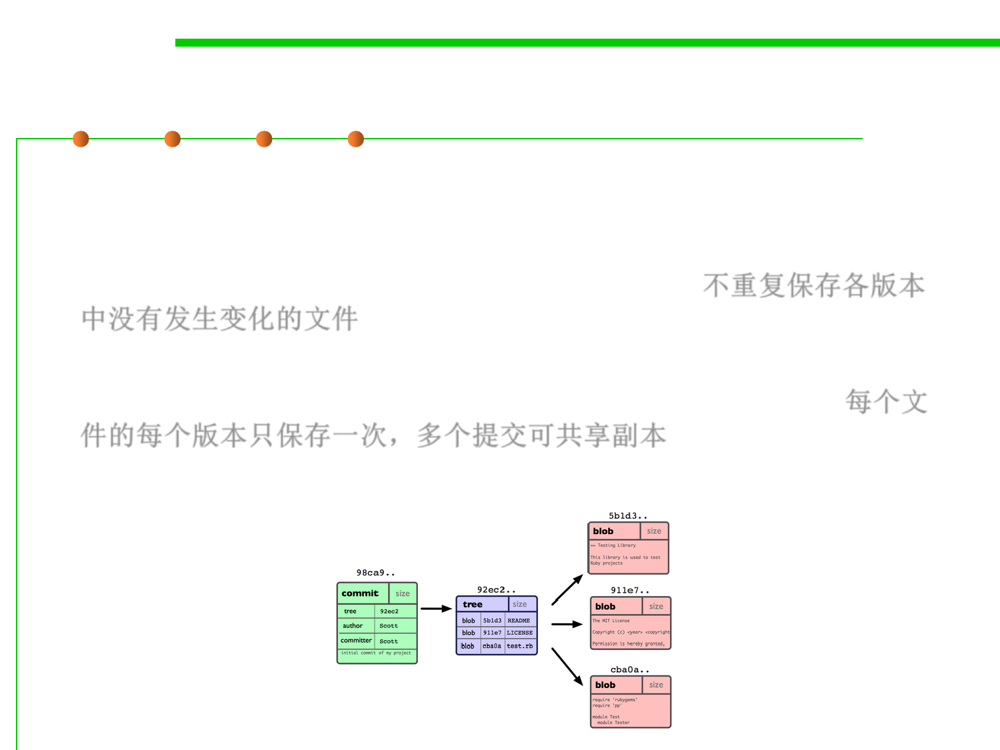

2.1 Software Lifecycle and Configuration Management
Commits: nodes in Object Graph
▪ Each commit is a snapshot of our entire project, which Git represents
with a tree node. For a project of any reasonable size, most of the
files won’t change in any given revision. Storing redundant copies of
the files would be wasteful, so Git doesn’t do that. 不重复保存各版本
中没有发生变化的文件
▪ Instead, the Git object graph stores each version of an individual
file once, and allows multiple commits to share that one copy. 每个文
件的每个版本只保存一次，多个提交可共享副本
▪ Each commit also has log data — who, when, short log message, etc.